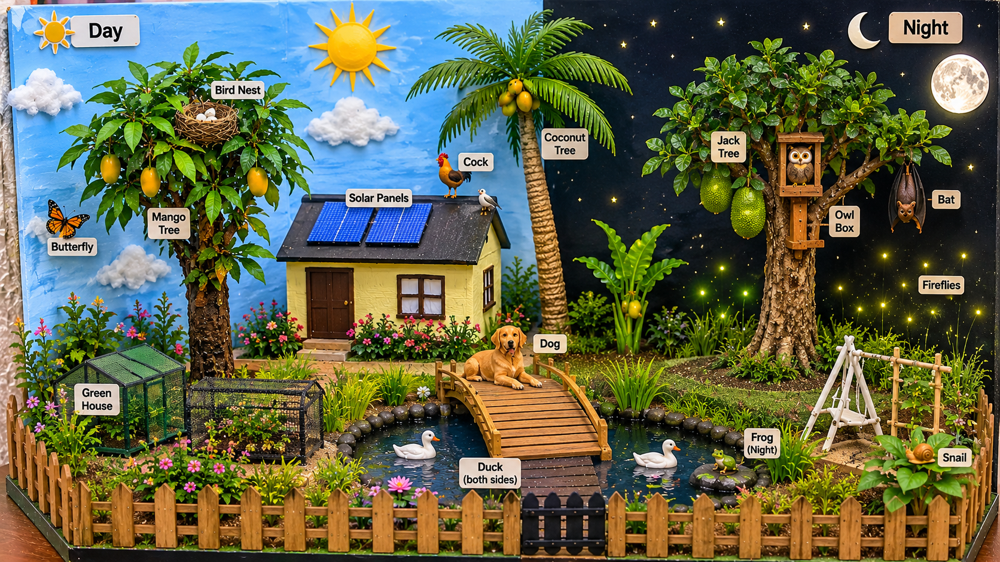

Terrestrial habitat
Mango, jackfruit, coconut and banana trees, flowering plants, grasses and cultivated vegetation provide food, shelter and microhabitats.
Exploring biodiversity, feeding relationships, energy flow and ecological interactions within a home-garden ecosystem across daytime and nighttime environments.
A digital field guide to our home-garden model
The garden contains terrestrial and aquatic habitats, cultivated plants and structures that provide resources and shelter for different organisms.
Mango, jackfruit, coconut and banana trees, flowering plants, grasses and cultivated vegetation provide food, shelter and microhabitats.
The pond represents an aquatic microhabitat that can support aquatic plants, algae, microorganisms and associated animals.
The house, solar panels, cultivation areas, greenhouse, composting and habitat structures demonstrate the interaction between people and ecological processes.
Energy moves through interconnected feeding relationships. A food web shows how several food chains are linked together within an ecosystem.
Terrestrial feeding relationships in the daytime habitat
These are representative feeding pathways. The actual diet depends on the species present.
Feeding interactions and ecological activity after sunset
Fireflies represent nocturnal insect activity. Their exact trophic role depends on the species and life stage.
The pond as a small aquatic ecosystem
The model pond illustrates a potential aquatic food web. Actual organisms and links depend on the pond's biological community. Ducks can feed on both plant and animal material.
Important: Arrows indicate the direction of energy transfer (food → consumer), not the direction in which an animal moves. Food-web relationships shown are illustrative ecological examples, not a claim that every organism is present in the model.
Organisms interact through pollination, seed dispersal, predation, decomposition and habitat use.
Dead organic matter is broken down and nutrients are returned to the environment, supporting further plant growth.
Fallen leaves, dead plant material and other organic remains.
Fungi and bacteria break down organic matter.
Earthworms and other detritivores fragment organic material.
Released nutrients become available for plant uptake.
A home garden is more than a collection of cultivated plants. It is a dynamic agroecosystem in which organisms interact with one another and with their physical environment. The coexistence of terrestrial and aquatic habitats, daytime and nighttime activity, and human-managed spaces demonstrates how biodiversity and ecological processes contribute to the functioning of a small ecosystem.